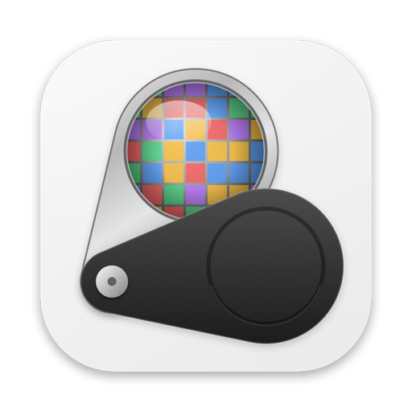
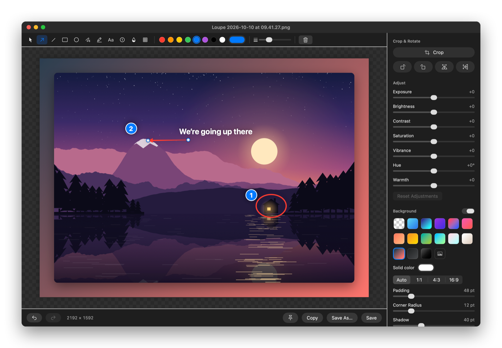

Loupe
A fast, native screenshot tool for macOS. Capture, edit, and polish screenshots in seconds.
Download for Mac
Features
Area, window & fullscreen
Drag to capture, click a window to grab just that window, or adjust the selection before you shoot.
Markup
Arrows, lines, shapes, text, highlighter, numbered steps, plus blur and pixelate for anything sensitive.
Beautiful backgrounds
Gradients, padding, rounded corners and soft shadows, ready to share.
Edit & adjust
Crop with aspect presets, rotate, and tune exposure, contrast, saturation and hue.
Quick access
A thumbnail after every capture: copy, save, edit, or drag straight into another app.
History, pins & timer
Browse recent captures, pin screenshots above other windows, and use a self-timer for menus.
Shortcuts
| ⌥⇧4 | Capture an area (or click a window) |
| ⌥⇧5 | Capture an area, adjusting it before capturing |
| ⌥⇧3 | Capture the full screen |
| ⌥⇧6 | Capture the previous area again |
| ⌥⇧7 | Capture with a self-timer |
Every shortcut can be changed in Loupe’s Settings.
Install
- Open the downloaded .dmg and drag Loupe into Applications.
- Open Loupe. Its icon appears in the menu bar.
- On your first capture, allow Loupe in System Settings → Privacy & Security → Screen & System Audio Recording, then reopen Loupe.
“Apple could not verify Loupe”?
This build isn’t notarized by Apple yet, so macOS asks you to confirm it the first time:
- macOS 15 and 26: open Loupe, dismiss the warning, then click Open Anyway in System Settings → Privacy & Security.
- macOS 14: right-click Loupe in Applications, choose Open, then confirm.
- Or in Terminal:
xattr -dr com.apple.quarantine /Applications/Loupe.app